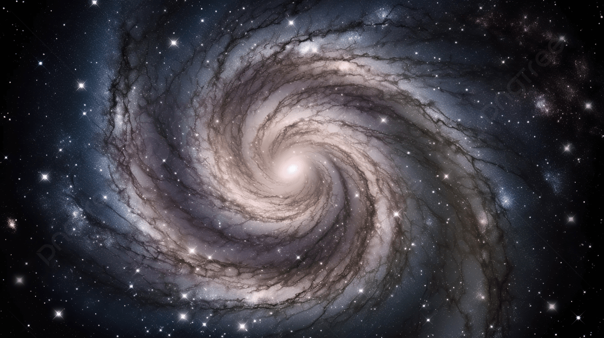
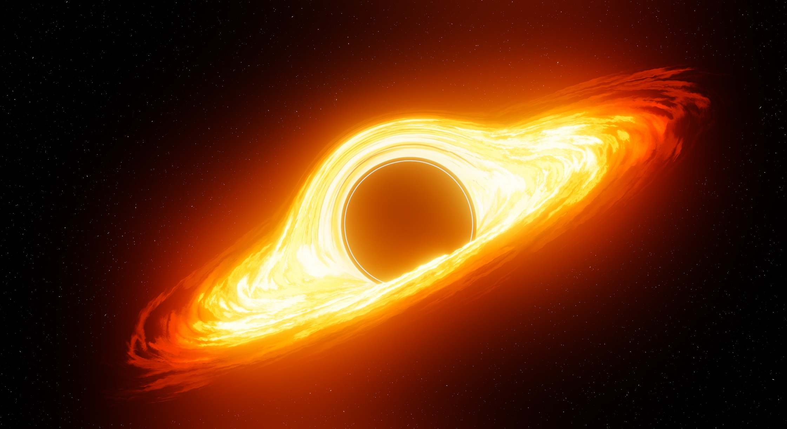
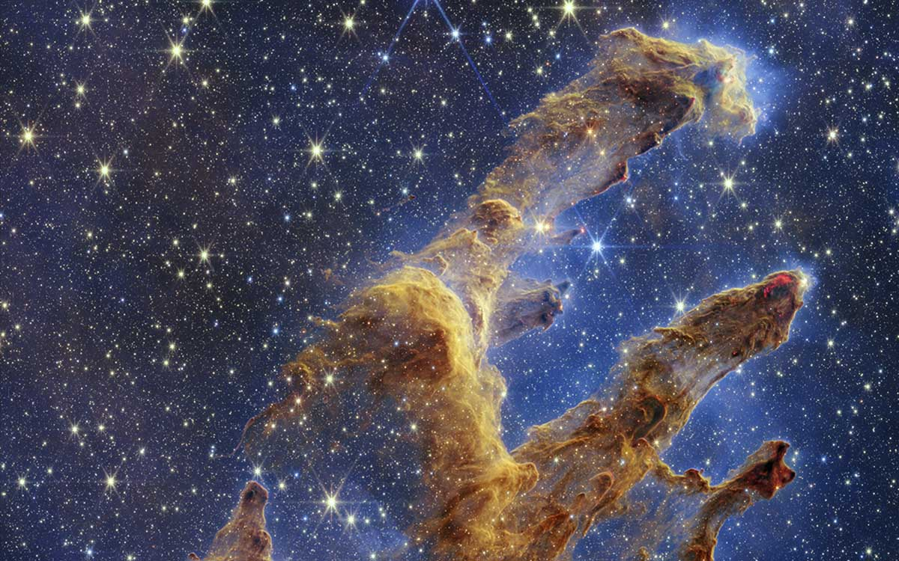

Empezando por el origen del universo, seguimos su evolución hasta el día de hoy, recorriendo todo lo que ha ido apareciendo en el camino: galaxias, estrellas, planetas y otros cuerpos que forman parte de esta enorme estructura en constante cambio. Ciro Arturo Garcia Montes de Oca 2N
El universo es absolutamente todo lo que existe: materia, energía, espacio y tiempo. Contiene miles de millones de galaxias, cada una con miles de millones de estrellas, planetas, nebulosas, cúmulos estelares y regiones de gas y polvo que se extienden a escalas casi incomprensibles. El universo observable tiene un diámetro aproximado de más de 93 mil millones de años luz, lo que significa que solo podemos ver una pequeña parte de su totalidad, ya que la luz de las regiones más lejanas aún no ha tenido tiempo de alcanzarnos. Los científicos creen que comenzó hace unos 13.800 millones de años con el Big Bang, un evento de expansión extremadamente rápido que dio origen al espacio, al tiempo y a toda la materia que conocemos hoy. Desde entonces, el universo no ha dejado de expandirse, formando estructuras cada vez más complejas como galaxias, supercúmulos y filamentos cósmicos que conectan la materia a gran escala.
Las estrellas son enormes esferas de plasma extremadamente caliente. Generan energía mediante reacciones nucleares en sus núcleos, donde la presión y la temperatura alcanzan valores tan extremos que permiten la fusión de elementos como el hidrógeno y el helio. Nuestro Sol es una estrella mediana, pero existen estrellas gigantescas capaces de ser millones de veces más brillantes y mucho más masivas, con tamaños tan enormes que podrían engullir sistemas planetarios completos. A lo largo de su vida, las estrellas pasan por diferentes etapas, desde su formación en nebulosas de gas y polvo hasta su fase final, que depende de su masa. Algunas estrellas terminan explotando como supernovas, liberando una cantidad inmensa de energía que puede iluminar galaxias enteras durante un corto periodo de tiempo. Estas explosiones pueden dar origen a agujeros negros, o a estrellas de neutrones, objetos extremadamente densos donde la materia se comporta de formas aún no completamente comprendidas.
El Sistema Solar está formado por el Sol, ocho planetas principales, lunas, cinturones de asteroides, cometas y polvo cósmico que orbitan de forma estable alrededor de nuestra estrella. Mercurio es el planeta más cercano al Sol, con temperaturas extremas debido a la intensa radiación solar, mientras que Neptuno es el más lejano, un mundo frío y azulado con vientos extremadamente rápidos que recorren su atmósfera a velocidades increíbles. Júpiter es el gigante gaseoso más grande del Sistema Solar, con una masa tan enorme que podría contener a todos los demás planetas combinados, y además posee una gran cantidad de lunas y una famosa tormenta llamada la Gran Mancha Roja que lleva activa cientos de años. Saturno destaca por sus enormes anillos, formados por hielo, polvo y fragmentos de roca, que lo convierten en uno de los planetas más visualmente impresionantes del sistema. La Tierra es el único planeta conocido con vida confirmada, gracias a la presencia de agua líquida, una atmósfera equilibrada y condiciones ideales para el desarrollo de organismos vivos. También cuenta con una gran diversidad de ecosistemas que la hacen única en el universo conocido.
Las galaxias son estructuras gigantescasformadas por estrellas, gas, polvo y materia oscuraque se mantienen unidas gracias a la gravedad.La Vía Láctea es la galaxia donde vivimos,un vasto sistema espiral que contiene cientos de miles de millones de estrellas,incluido nuestro propio Sistema Solar,situado en uno de sus brazos exteriores.Algunas galaxias tienen forma espiral,con brazos que giran alrededor de un núcleo brillante,otras son elípticas, con formas más redondeadas y antiguas,y algunas son irregulares, sin una estructura definida,a menudo deformadas por colisiones con otras galaxias.En el centro de muchas galaxiasexiste un agujero negro supermasivo,cuyo campo gravitatorio es tan intenso que influye en el movimiento de millones de estrellasy puede liberar enormes cantidades de energía cuando absorbe materia.
Los meteoritos son fragmentos de roca espacial que provienen de asteroides, cometas o restos de formaciones planetarias antiguas, y que atraviesan la atmósfera terrestre a gran velocidad. Cuando entran en contacto con el aire, se calientan intensamente, produciendo el fenómeno luminoso conocido como estrella fugaz, y en algunos casos logran impactar la superficie del planeta. Los cometas contienen hielo, polvo y compuestos orgánicos, y suelen provenir de las regiones más lejanas del Sistema Solar. Cuando se acercan al Sol, el calor provoca que el hielo se sublime, formando enormes colas brillantes que pueden extenderse millones de kilómetros y que siempre apuntan en dirección opuesta al Sol debido al viento solar. Estos objetos viajan a velocidades increíbles por el espacio profundo, cruzando órbitas planetarias y regiones vacías del cosmos, y representan restos primitivos de la formación del Sistema Solar, lo que los convierte en piezas clave para comprender su origen y evolución.
El universo observable es la parte del cosmos que podemos ver desde la Tierra, limitada por la distancia que la luz ha podido recorrer desde el inicio del universo. Todo lo que está dentro de este límite puede ser estudiado mediante telescopios, radiación electromagnética y diferentes tipos de observación astronómica. Sin embargo, más allá de este límite existe una región mucho más grande que no podemos observar directamente, no porque no exista, sino porque la luz de esas zonas aún no ha tenido tiempo suficiente para llegar hasta nosotros. Esto significa que el universo observable no es el universo completo, sino solo una pequeña parte de él. A medida que el universo se expande, este límite también cambia con el tiempo, lo que hace que la “zona visible” desde nuestra perspectiva aumente lentamente.
Los telescopios son instrumentos fundamentales para el estudio del universo, ya que permiten captar la luz de objetos extremadamente lejanos que el ojo humano no puede ver. Gracias a ellos, podemos observar galaxias formadas hace miles de millones de años, estrellas en proceso de nacimiento y fenómenos cósmicos que ocurrieron en las primeras etapas del universo. Existen telescopios en la Tierra y también en el espacio, como los que orbitan fuera de la atmósfera, lo que permite obtener imágenes más claras al evitar la distorsión del aire terrestre. En esencia, cada observación astronómica es también una mirada al pasado, porque la luz que llega hasta nosotros ha viajado durante enormes períodos de tiempo.
Las nebulosas son enormes regiones del espacio formadas por gas y polvo cósmico ☁️, que pueden extenderse a lo largo de cientos de años luz. Algunas nebulosas son conocidas como “guarderías estelares”, ya que en su interior se forman nuevas estrellas a partir del colapso de la materia por gravedad. Otras nebulosas son el resultado de la muerte de estrellas masivas, que expulsan sus capas externas al espacio en explosiones violentas, enriqueciendo el entorno con nuevos elementos químicos. Con el paso del tiempo, estas estructuras cambian lentamente, dando lugar a nuevas generaciones de estrellas y sistemas planetarios.
Los satélites naturales son cuerpos celestes que orbitan planetas debido a la gravedad, como la Luna en el caso de la Tierra. Estos satélites influyen en fenómenos importantes como las mareas y pueden estabilizar la rotación de los planetas a lo largo del tiempo. Por otro lado, los satélites artificiales son construidos por el ser humano y enviados al espacio para cumplir funciones tecnológicas y científicas. Se utilizan para comunicación global, navegación GPS, observación meteorológica y exploración del espacio profundo, convirtiéndose en una parte esencial de la tecnología moderna.
El espacio entre las estrellas no está completamente vacío, sino que contiene una cantidad extremadamente pequeña de materia dispersa. Este medio interestelar está compuesto por gas, polvo cósmico, radiación y partículas cargadas, aunque su densidad es tan baja que en la práctica parece un vacío absoluto. A pesar de ello, este entorno juega un papel importante en la evolución de las galaxias, ya que en estas regiones se pueden formar nuevas estrellas cuando la materia se concentra lo suficiente. También es un medio por el que viajan ondas de energía y partículas de alta velocidad, conectando diferentes regiones del universo de forma invisible.

Una galaxia espiral es una enorme estructura formada por miles de millones de estrellas, gas y polvo que giran alrededor de un núcleo central. Sus brazos contienen regiones donde nacen nuevas estrellas, lo que la convierte en una de las formas más comunes y espectaculares del universo.

Un agujero negro es una región del espacio donde la gravedad es tan intensa que nada puede escapar, ni siquiera la luz. Se forma cuando una estrella muy masiva colapsa al final de su vida, creando un objeto extremadamente denso y misterioso.

Una nebulosa es una enorme nube de gas y polvo en el espacio, donde nacen nuevas estrellas o donde quedan restos de estrellas antiguas. Con el tiempo, estas regiones cambian y dan origen a nuevos sistemas estelares.